見た目から、選ぼう。
気になる模様をひとつ。かたちも色も、その先で変えられます。
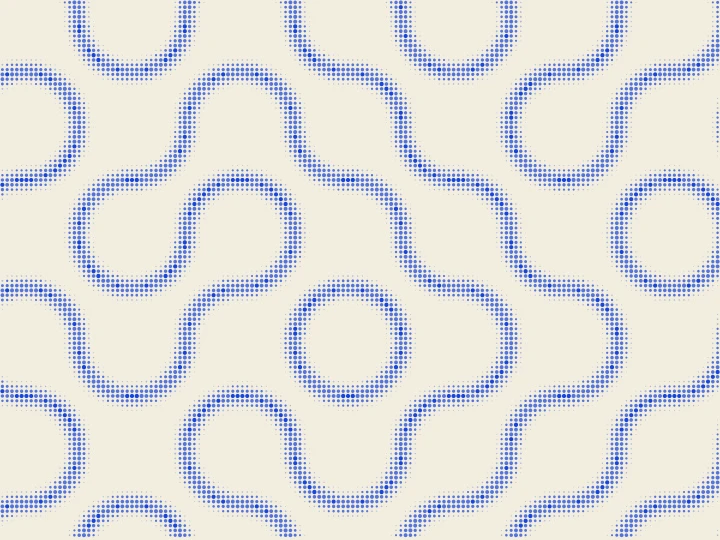
NEWトルーシェ
01向きを変えた円弧がつながり、輪や迷路が現れる。小さなタイルから、大きな流れをつくります。
この模様から作る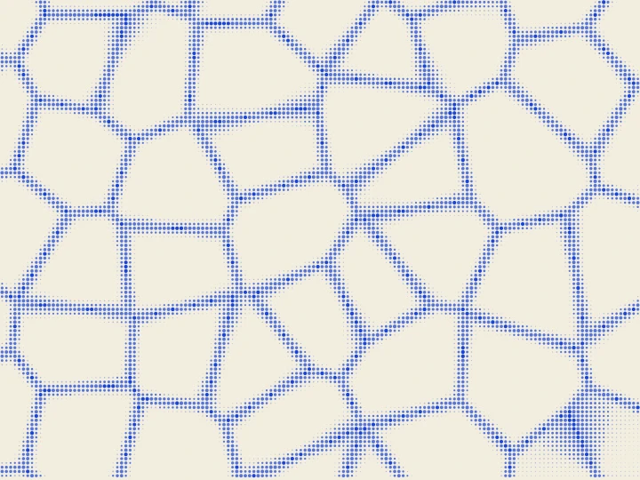
NEWボロノイ
02点と点のあいだに、細胞や石組みのような境界が生まれる。領域の大きさとゆらぎで、整った網目から有機的な模様へ。
この模様から作る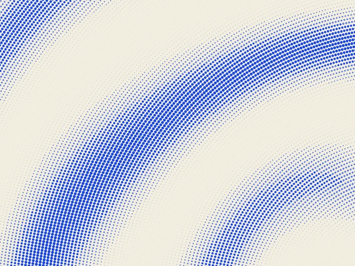
極格子
03同心円に点を並べると、大きな波が見えてくる。間隔とねじれを変えて、静かなうねりから細かな織り目まで。
この模様から作る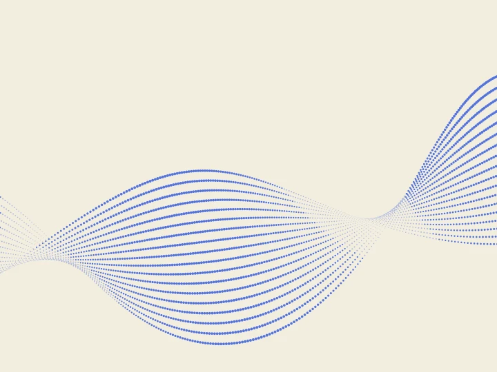
リボン
04点でできたリボンを、ゆっくりねじる。折り重なるところが濃くなり、平面の上に奥行きが生まれます。
この模様から作る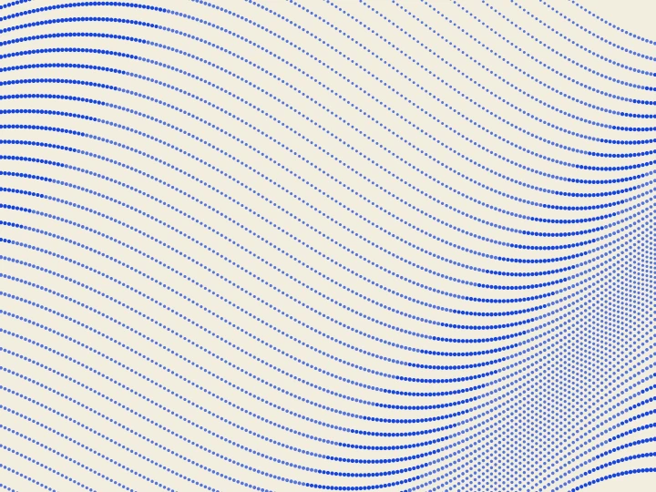
布
05布がふわりと波打つように、点の列がたわむ。光の向きと面の傾きで、やわらかな陰影をつくります。
この模様から作る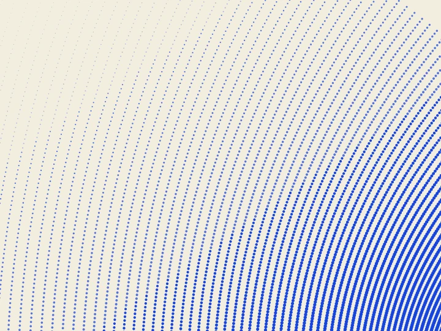
等角写像
06整った格子を、曲線の網へ。交わる角度を保ちながら、点の流れを大きく曲げていきます。
この模様から作る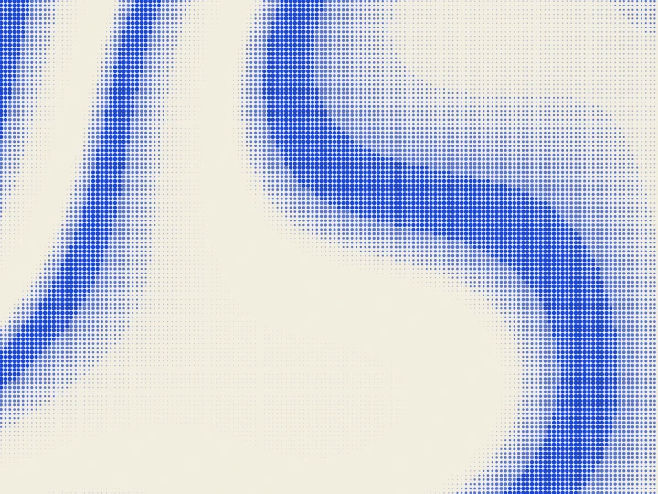
等高線
07水面にも、地形にも見える、なだらかな帯。波を重ねて、等高線のような濃淡を描きます。
この模様から作る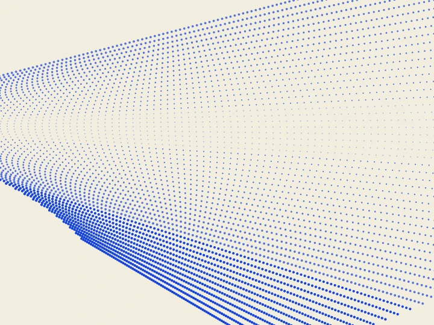
ねじれ格子
08整列した点を、少しずつ回して伸ばす。規則正しい格子に、布のたわみのような動きが生まれます。
この模様から作る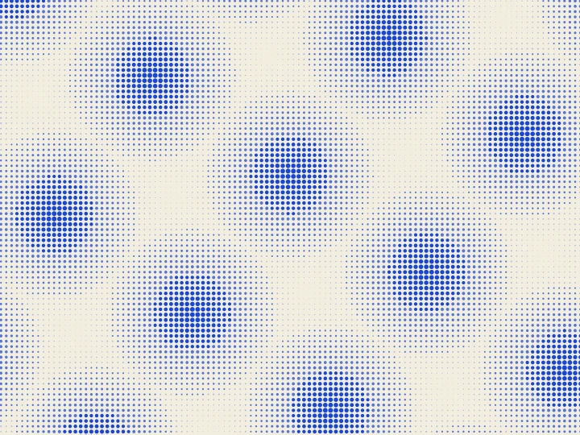
モアレ
09わずかなずれから、大きなリズムが生まれる。2枚の格子の間隔と角度を変えて、干渉模様を探ります。
この模様から作る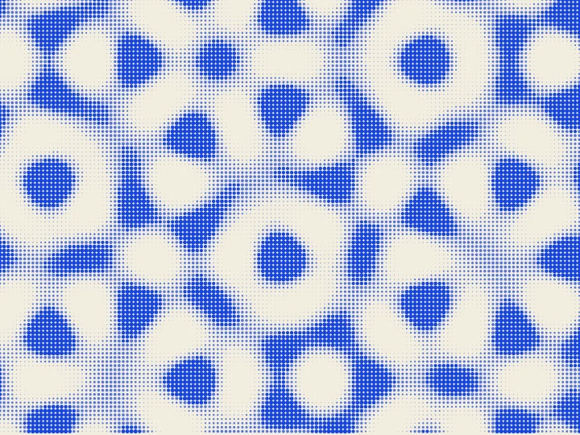
準結晶
10規則はあるのに、同じ並びを繰り返さない。5方向や7方向の波が重なって、結晶のような模様が現れます。
この模様から作る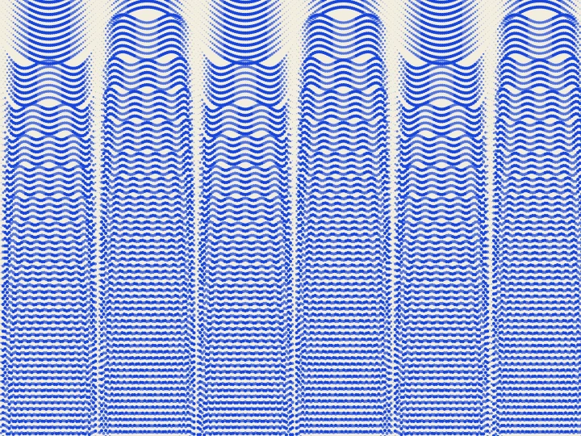
ギブス現象
11なめらかな波を重ねると、角の近くに小さな揺れが残る。その消えない揺れを、点の列で描きます。
この模様から作る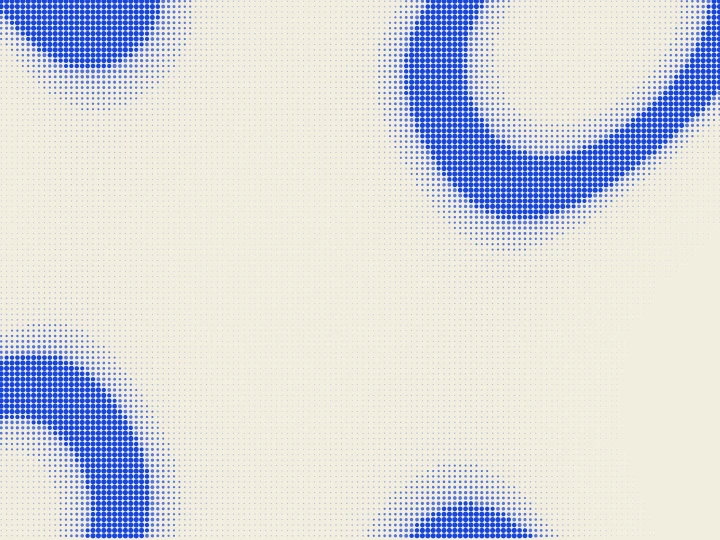
焦線
12水底に差す光のように、濃淡が弧を描く。面のひずみから、光が集まる場所を思わせる筋をつくります。
この模様から作る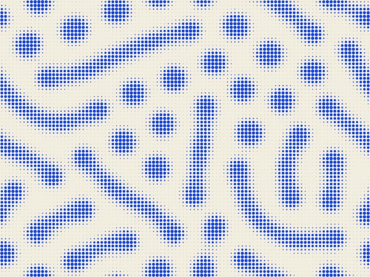
反応拡散
13点が育ち、つながり、迷路になる。2つの成分の反応と拡散から、有機的な模様をつくります。計算には少し時間がかかります。
この模様から作る